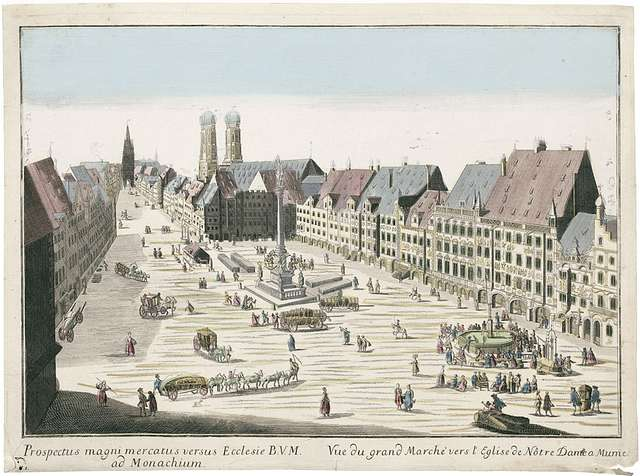
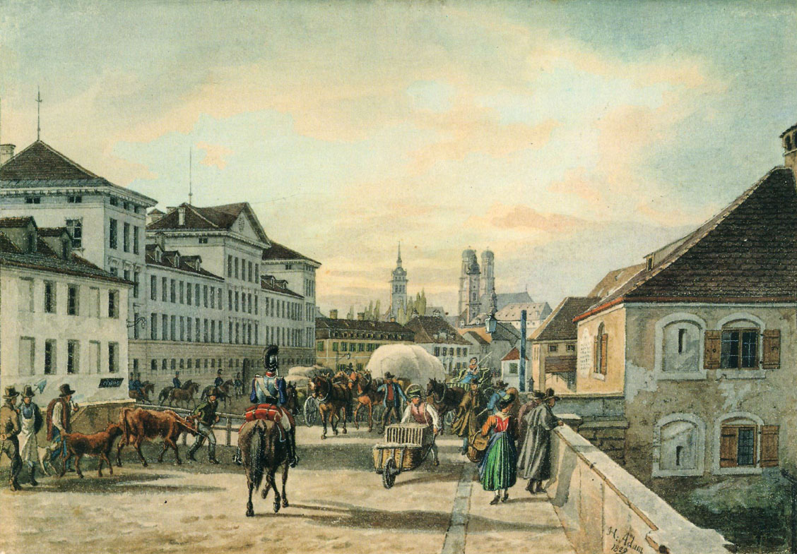
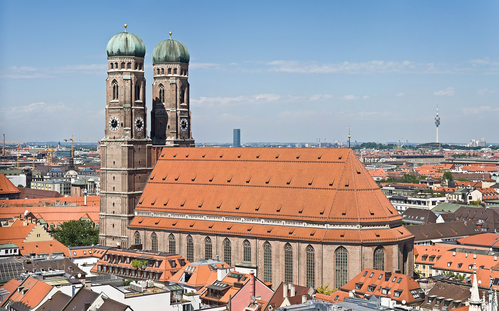
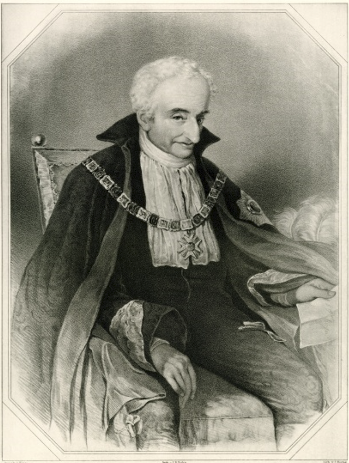
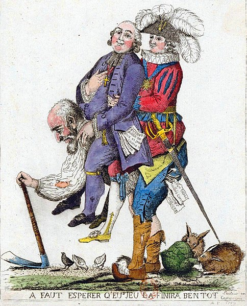

바이에른의 배신 (4) - 모든 것은 계획대로
게시: 2024-09-02T06:30:24+09:00
막시밀리안 조제프에게 1799년 2월 날아든 소식은 바이에른 선제후 카알 테어도어가 죽었다는 것이었습니다. 이는 막시밀리안 조제프가 바이에른 선제후로 등극하게 된다는 뜻이었습니다. 전에 이미 언급한 대로, 이는 이미 정해진 일로서, 적자가 없던 카알 테어도어의 후사는 원래부터 또다른 방계인 팔츠-츠바이브뤼컨(Pfalz-Zweibrücken) 공작으로 정해져 있었습니다. 그러니까 그의 후계자는 그와 불편한 관계에 있던 츠바이브뤼컨 공작 카알 2세(Karl II. August Christian)였는데, 카알 2세가 먼저 사망하는 바람에 갑자기 그 동생인 막시밀리안 조제프가 자동으로 지명 후계자가 되었습니다. 그리고, 카알 테어도어의 사망과 함께, 이제 막시밀리안 조제프는 바이에른 선제후 막시밀리안 1세가 된 것입니다. 어떻게 보면 가장 행운아라고 할 수 있는 사람은 막시밀리안보다도 몽겔라스라고 할 수 있었습니다. 바이에른의 국정 운영을 꿈꾸며 공직에 나섰다가 일루미나티 조직원이라는 이유로 카알 테어도어에게 쫓겨난 실직자 신세였던 몽겔라스는, 공작 가문의 별 것 아닌 차남이던 막시밀리안의 개인 비서로 취직할 때만 해도 자신이 다시 바이에른의 국정에 참여할 기회를 얻게 되리라고는 상상도 하지 못했을 것입니다. 그러나 이제 그는 이제 막 등극한 바이에른 선제후 막시밀리안 1세가 가장 신임하는 측근으로서 바이에른의 국무장관으로 당당히 뮌헨에 입성하게 된 것입니다. 이 얼마나 뜻하지 않은 반전이었을까요?

(이 그림은 1760년 대의 뮌헨 시내를 그린 그림입니다. 선입견 때문인지는 몰라도 파리나 빈에 비하면 확실히 좀 휑한 듯합니다. 저기 랜드마크 건물로 보이는 저 쌍동이탑은 지금도 남아있는 프라우언키르헤(Frauenkirche)로 보입니다.)

(이 그림은 1823년 뮌헨 외곽에서 열린 옥토버페스트(Oktoberfest)의 모습인데, 저 멀리 프라우언키르헤의 모습이 보입니다.)

(이 그림은 1829년 그려진 뮌헨 시내의 모습입니다. 여기서도 프라우언키르헤의 모습이 보이는데, 확실히 파리 등에 비하면 무척 소박한 도시입니다.)

(뮌헨 성모성당인 프라우언키르헤(Frauenkirche)의 현재 모습입니다. 실제 들어보면 프라우언키어체 정도로 들립니다만 한국어 표기는 이렇게 하더군요. 이 건물은 사실 제2차 세계대전 이후 거의 새로 지은 것으로서 1994년에야 복원이 완료되었습니다. 당시 폭격으로 쌍동이탑 하나는 심각하게 파괴되었고 성당 지붕도 무너졌었다고 합니다.) 그런데... 정말 뜻하지 않은 일이었을까요? 기억하시겠습니다만 카알 테어도어에게 쫓겨난 몽겔라스가 처음 찾아간 곳이 바로 츠바이브뤼컨 공작 카알 2세였습니다. 거기서도 쫓겨나게 되자 몽겔라스는 더 좋은 일자리를 찾아갈 수 있었을 것 같은데도 막시밀리안 조제프를 찾아갔습니다. 당시 막시밀리안은 차남이기 때문에 별다른 재산이나 작위를 가지지 못했고 생계를 위해 프랑스에서 직업 군인 생활을 하다가 그나마 대혁명으로 인해 실직 상태였습니다. 왜 굳이 몽겔라스는 그런 집도 절도 없는 고용인을 찾아갔을까요? 바로 츠바이브뤼컨 공작의 동생이기 때문이었습니다. 아마 몽겔라스는 츠바이브뤼컨 공작가에 잠깐 있을 때 카알 2세의 건강이 좋지 못하다는 것을 알았기 때문일 수도 있습니다. 카알 2세가 만약 일찍 사망한다면, 아니, 늦게 사망한다고 해도, 카알 2세는 동생인 막시밀리안보다 무려 10살이나 더 많았으므로 동생보다 반드시 더 먼저 죽을 것이 확실했습니다. 역시 자식이 없던 카알 2세의 후계자는 동생 막시밀리안이 될 수 밖에 없었고, 결국 바이에른 선제후의 자리는 막시밀리안에게 돌아오게 되어 있었습니다. 아마 몽겔라스는 이 모든 것을 계산에 넣고 막시밀리안을 찾아갔을 것입니다. 이렇게 재개발 동네에 알박기하는 것 같은 장기투자의 대성공으로 드디어 바이에른 선제후의 오른팔이자 국무장관이 된 몽겔라스는 행복하게 오래오래 살았을까요? 물론 몽겔라스가 그렇게 와신상담을 하면서까지 기어이 바이에른 궁정에 입성한 것은 고액 연봉과 명예, 권력을 누리기 위함이 아니었습니다. 그는 일루미나티였습니다. 그가 원한 것은 대대적인 개혁과 근대화의 길로 바이에른을 이끄는 것이었습니다.

(몽겔라스의 다른 초상화입니다. 그가 쫓겨난 이후 국무장관이 되기까지의 과정을 읽고 보면 진짜 뭔가 음흉한 비밀조직의 악당처럼 보입니다.)
일단 그렇게 입성한 당시 바이에른은 결코 화려하고 풍요로운 곳이 아니었습니다. 당시 바이에른은 상당수 국민들이 럼포드 수프라는 이름의 감자보리죽으로 연명하는 가난한 나라였습니다. 전통적인 농업 이외의 산업은 보잘 것 없었고 통상은 미미했습니다. 오늘날엔 잘 사는 독일 내에서도 가장 부유한 지방인 바이에른이 당시엔 대체 왜 그랬을까요? 정확히 말하면 당시 바이에른에 특별한 문제가 있었다기 보다는 그냥 바이에른도 중서부 유럽의 다른 지방들과 똑같은 전근대적 국가이기 때문이었습니다. 상당수 국민들이 밀로 만든 빵을 먹지 못하고 감자와 보리를 쑤어 만든 죽을 먹는 것은 그렇게 드문 일이 아니었습니다. 당시는 기후학적으로 소빙기 시대라서 농작물 수확이 풍요롭지는 못했고, 또 워낙 세금이 무거웠습니다. 외국 군대의 침범을 받지 않는데다 넓고 비옥한 영토 덕분에 농민들의 삶이 그나마 다른 나라들보다 더 나았다고 하는 당시 프랑스의 경우, 대혁명 이전 보통 농민들은 수입의 50% 정도를 이런저런 명목의 세금으로 뜯겼습니다. 그 정도의 세금은 당시 유럽에서는 평범한 수준이었는데, 국왕에게, 지주인 귀족에게, 또 교회에게 낼 것들이 많았던 것입니다. 거기에 자기 땅을 가지지 못한 농민들이 지주에게 추가로 내야 했던 소작료나 집세 등을 더하면 아무리 농사를 지어도 입에 풀칠하기가 어려웠습니다.

(따로 설명이 필요없는, 3개의 계급이라는 유명한 풍자화입니다. 저기에 쓰인 프랑스어는 완전한 현대어는 아닌 'A faut espérer q'eu jeu la finira ben tot'로서, '우리는 이 놀이가 빨리 끝나기를 바란다'라는 뜻입니다.) 게다가 바이에른은 프랑스 농민들에 비해 추가적으로 심각한 문제까지 떠안고 있었습니다. 바로 외국군의 침공이었습니다. 당시 바이에른의 영토에는 프랑스군과 오스트리아군이 번갈아가며 마치 제집 지나들듯 마음대로 오갔는데, 국경을 지킬 군대는 오합지졸 수준의 훈련과 장비를 갖춘 상태에서 그나마 머릿수도 제대로 채우지 못하고 있었습니다. 대단한 전술가는 아니었지만 그래도 프랑스에서 직업 군인으로 복무한 바 있던 막시밀리안 1세는 무엇보다 바이에른군의 정비가 시급하다고 생각했습니다. 오스트리아군과 프랑스군이 바이에른 민간인들을 학살하며 돌아다니는 것은 아니었지만, 아무래도 외국군들이 바이에른 영토 내에서 제멋대로 싸움질을 하면서 농업과 상업을 방해할 뿐만 아니라 농민들로부터 식량과 물자를 징발해가는 것은 바이에른의 경제에 큰 위협이기 때문이었습니다. 하지만 몽겔라스는 생각이 약간 달랐습니다. 상대는 최소 사단 단위로 움직이는 프랑스군과 오스트리아군이었습니다. 전장에 기껏해야 몇 개 연대 수천 명을 동원할 수 있는 것이 고작이었던 바이에른군에 많은 예산을 투여하여 정예군으로 다듬는다고 해도, 프랑스군과 오스트리아군으로부터 국경을 지켜낼 수는 없었습니다. 설령 전투에서 한두 번 이긴다고 해도, 그 뒤에 더 증강되어 몰려올 적군을 상대로 언제까지 연전연승할 수는 없었습니다. 게다가 군대를 정비하려면 돈이 필요했는데, 바이에른의 국고는 부실하기 짝이 없었고 바이에른 농민들에게 더 이상 세금을 쥐어짤 수도 없었습니다. 몽겔라스의 권유로 막시밀리안 1세가 가장 먼저 취한 정책은 외교였습니다. 바이에른의 안보에 전통적으로 가장 위협이 되는 것은 힘센 이웃들 오스트리아와 프로이센이었습니다. 프랑스군 장군이었던 막시밀리안 1세는 물론, 사보이 가문 출신이자 프랑스 유학파였던 몽겔라스는 친프랑스적인 성격이 뚜렷했습니다. 그들은 오스트리아와 프로이센으로부터 나라를 지키기 위해서는 과거처럼 오스트리아와 프로이센 사이에서 우왕좌왕하지 않고 그냥 노골적인 친프랑스 정책을 펼치는 것이 최선이라고 의견 일치를 보았습니다. 프랑스 대혁명은 이들에게 시련도 주었지만 나폴레옹의 통령 정부가 들어서면서 안정된 프랑스는 이들에게 기회도 되었습니다. 막시밀리안 1세도 프랑스의 계몽주의에 대해서는 호의적인 입장이었고, 전직 일루미나티 조직원인 몽겔라스는 말할 나위 없었습니다. 이들은 결국 국가 안보를 프랑스, 더 정확하게는 나폴레옹에게 위탁하기로 합니다. 하지만 생각해보면 오스트리아나 프로이센은 모두 같은 독일 민족인데 비해, 프랑스는 엄연한 이민족 국가였습니다. 몽겔라스의 그런 친프랑스 정책에 대해 혹시 민족주의적인 측면에서 국민적인 저항이 일어나지는 않았을까요? Source : The Life of Napoleon Bonaparte, by William Milligan Sloane Napoleon and the Struggle for Germany, by Leggiere, Michael V With Napoleon's Guns by Colonel Jean-Nicolas-Auguste Noël https://en.wikipedia.org/wiki/History_of_Bavaria https://en.wikipedia.org/wiki/Maximilian_I_Joseph_of_Bavaria https://en.wikipedia.org/wiki/Maximilian_von_Montgelas https://jenikirbyhistory.getarchive.net/amp/topics/munich+in+the+18th+century https://en.wikipedia.org/wiki/Frauenkirche,_Munich https://en.wikipedia.org/wiki/Timeline_of_Munich https://www.worldhistory.org/article/1960/the-three-estates-of-pre-revolutionary-france/